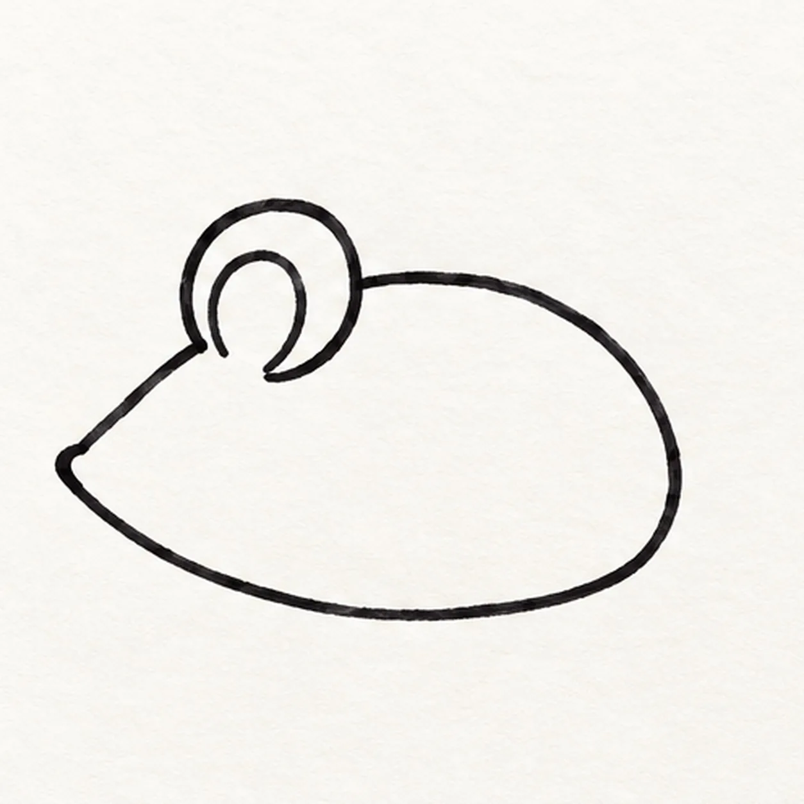
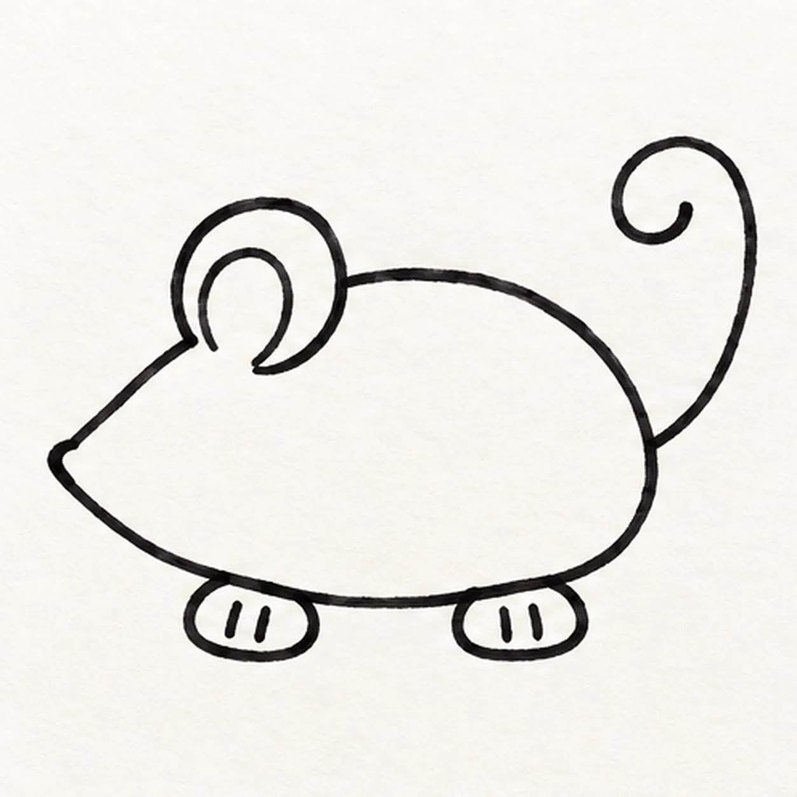
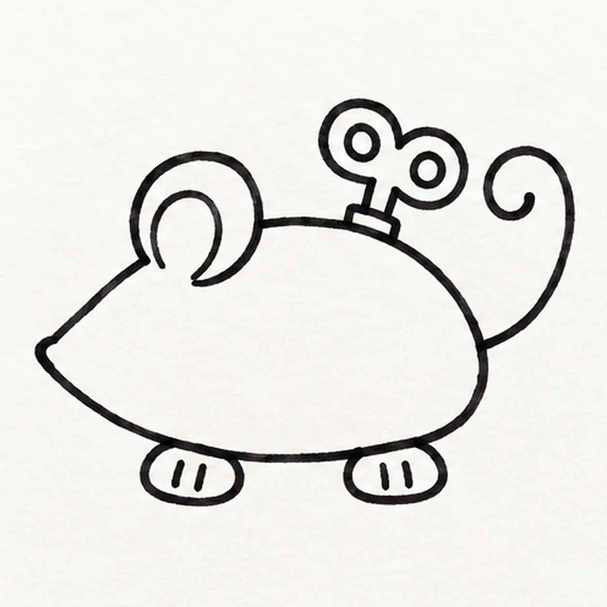
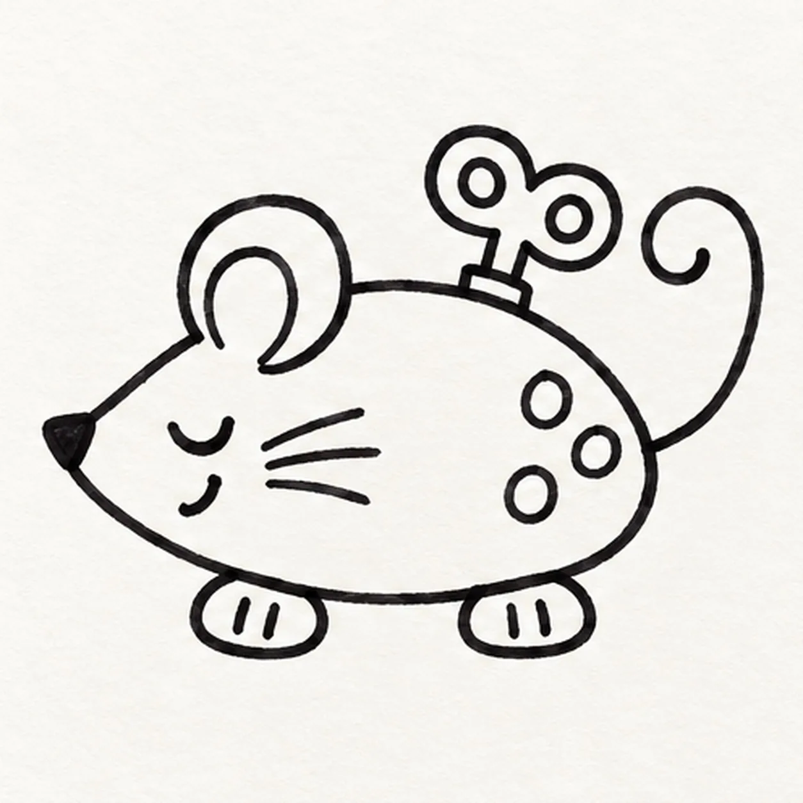

Marker ready?
Let's draw a wind-up mouse
Treat this as one playful practice round: sketch the idea loosely, simplify the shapes, then commit with confident marker outlines and bright fills.
-
01

Shape the toy mouse
Draw one low teardrop body pointing left, keeping the rear broad and the snout small. Attach one round ear near the upper front and add one curved inner-ear line.
Marker tip: Pull the body outline in two relaxed arcs. The small snout and oversized ear make the mouse readable before any face appears.
-
02

Add the feet and curled tail
Attach exactly two rounded feet beneath the body and add two short seam marks inside each one. From the rear point, pull one thin tail upward and curl it into one open loop.
Marker tip: Plant both feet on the same baseline. Rotate the page before drawing the tail so its curl stays smooth and clear of the body.
-
03

Attach the wind-up key
From the upper rear body, draw one short key shaft and a small collar where it attaches. Cap the shaft with exactly two sideways oval lobes, leaving a narrow gap between the key and the curled tail.
Marker tip: Trace the shaft with your finger back to its body collar. That fixed connection makes the key feel built into the toy instead of floating above it.
-
04

Give it a sleepy face
Add one sleepy crescent eye, one dark triangular nose, and a tiny crooked smile. Pull exactly three whiskers back from the visible cheek, then place exactly three small round spots across the rear body.
Marker tip: Keep the eye and smile asymmetrical for a drowsy expression. Count three whiskers and three spots before reaching for color.
-
05
![Handmade felt-tip marker drawing of one left-facing coral wind-up toy mouse with one round mustard inner ear, one sleepy crescent eye, one black triangular nose, one crooked smile, exactly three black whiskers, exactly two teal feet with two seam marks each, one black tail curled into an open loop, one attached mustard wind-up key with two oval lobes, exactly three teal body spots, exactly two open-paper highlights, thick imperfect black outlines, visible marker streaks, and one broken deep-navy shadow](assets/cartoon-wind-up-mouse-finished-v1.webp)
Wind up the bright color
Fill the established body coral, inner ear and key mustard, and both feet plus all three spots teal. Leave exactly two small body highlights open and add one broken deep-navy shadow beneath the feet; keep the black outline visible and add no new structural contours.
Marker tip: Pull coral strokes from nose to tail and work around both highlight gaps. Let neighboring colors dry before they touch so the black outline stays crisp but handmade.